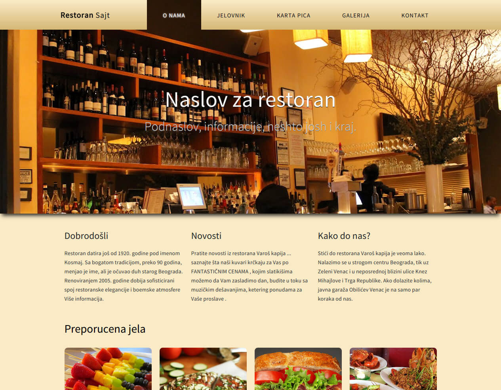
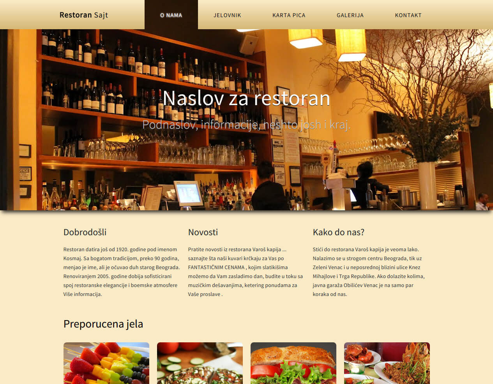

Menu Examples
Just some fun examples of slide-in menus done in HTML5, CSS3 and JS. These are not original designs, I found them around the web, but the code and implementation are completely done by me.

 
Just some fun examples of slide-in menus done in HTML5, CSS3 and JS. These are not original designs, I found them around the web, but the code and implementation are completely done by me.
First time converting full PSD design to code. The original design is by this guy. Did it as an excercise and completed the project from start to finish with JADE and SASS and I can safely say that I'm not going back to vanilla html or css :)
Fun, 80's styled sound board. I had a lot of fun with scripting this one because of the limitations of HTML5 audio element in which, a loop is available but not very suitable for a non-stop looping of a certain track so to produce an effect desired in a sound board. Basically, you always get a small, couple of milliseconds, pause at the end of the loop which is problematic if you need to produce a certain kind of rhythm and maintain BPM of the track.
My solution? Two players in a "if else" loop which loads and plays the first one, then stops for a certain amount of time (the duration of a track), then loads the source of the first to the second one and plays it. Rinse and repeat :)
Snapshot of a work in progress.Done in standard frontend lingos (HTML5, CSS3 and jQuery). Design is, to an extent, inline with emerging trends that people ussualy love to hate BUT which provide a really slick and fluid user experience.
HTML5 for structure, CSS3 for style and JS for interesting stuff. Built on top of ideas developed during talks with the client. An effort to strike a balance between "good looking", "lightweight" and very approachable web site that is consistent and coherent and allows you to quickly get important CLICK FOR INFOrmations on how to get food :)
A frontend for my collection of radio streams that get me through the day. It's simple, static and responsive. It plays the station and gets out of the way.
Quick and snappy one-page scroller geared toward a single mobile app launch. Coupled with some nifty paralax tricks to make it more interesting. Converted from THIS PSDdesign.
This was just a fun little project that I did in my spare time. Just check out the site for yourself, you'll find all the CLICK FOR INFO you need to know :)
I am a self-taught front-end developer with my sights firmly pointed at the full stack. As of the beginning of 2015, examples listed here are mainly focused on HTML5, CSS3 and JS, mostly written from scratch.
In following months I will be diving into SASS , JADE , PHP and CMS's so you can expect updates. If you have any questions or would like to get in contact with me, feel free to use the form on the right.
This is a place where prototypes, ideas, unfinished & side projects unite in one pretty graveyard-like place. One which is easy to search and find why, when & what the hell was I thinking when I tried to implement that one glorius feature that didn't make the final cut. Also, a place where to put really long sentences, apparently.
This is my playground.
p.s. A good place to start is my RESUME or contact me HERE.